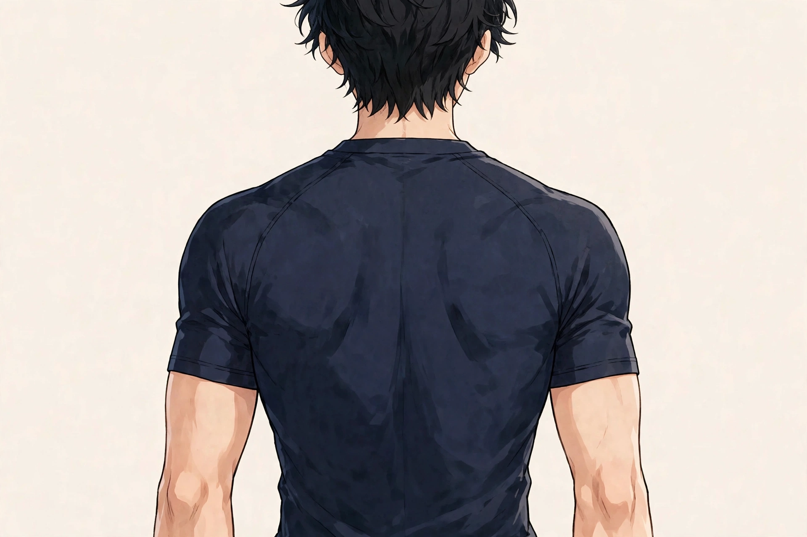

SYMPTOM GUIDE ｜ 東三国・新大阪
腕を上げたときの肩の詰まり感でお悩みの方へ東三国・新大阪の男性専用整体院 北辰堂

腕を横から上げていくと、途中の引っかかりや、肩の奥の詰まった感じがある——。洗濯物を干す、棚の上の物を取るといった何気ない動作で気づく方が多い感覚です。
このページでは、腕を上げるときの肩関節の仕組みと、詰まり感が出る角度の意味、五十肩との違い、東洋医学の考え方とツボ、施術の考え方、セルフケア、受診の目安を整理しました。動かしたときだけ出る感覚に絞って解説します。一般的な健康情報としてご覧ください。
① 腕を上げたときの肩の詰まり感とは
肩関節は、腕の骨（上腕骨）の丸い頭が、肩甲骨の浅い受け皿に乗った構造です。腕を上げるときは、上腕骨頭が受け皿の上を転がりながら滑り、肩甲骨自体も背中の上で回転します。この連動を肩甲上腕リズムと呼び、どちらかが滞ると動きの途中に無理が生まれます。
腕を上げたときの詰まり感で知られるのが、肩峰下インピンジメントという考え方です。肩甲骨の屋根（肩峰）と上腕骨頭の間には、腱板や滑液包が通る狭い空間があり、腕を上げる途中でこの空間が狭くなると、挟み込まれるような痛みや詰まり感が出ると考えられています。
出やすい角度は横から上げたときの60〜120度あたりとされ、この範囲をペインフルアーク（有痛弧）と呼びます。角度によって出たり消えたりする場合は、骨そのものよりも、腱板の働きや肩甲骨の連動、姿勢による空間の狭さが関係していることが多いとされます。
棘上筋をはじめとする腱板は、上腕骨頭を受け皿に引きつける役割を持ちます。三角筋が腕を持ち上げる力と、腱板が位置を整える力のバランスが詰まり感に関係します。位置は目安です。
② 要因の整理
詰まり感の要因は、腱板の働き、肩甲骨の連動、姿勢の3つに整理できます。
- 腱板の筋力・協調の低下：腱板が骨頭を引きつける力が弱いと、腕を上げるときに骨頭が上方へずれ、肩峰下の空間が狭くなりやすくなります。加齢や運動不足で起きやすい変化です。
- 肩甲骨の連動の滞り：肩甲骨が背中で十分に回転しないと、屋根である肩峰が逃げず、空間が狭いまま腕が上がります。背中側の筋肉の硬さが背景にあることがあります。
- 巻き肩・猫背姿勢：肩が前に巻いた姿勢では、肩峰の向きが下がり、もともとの空間が狭くなります。デスクワーク姿勢が土台になっている方は多くいます。
- 繰り返しの上げ下ろし動作：棚の整理、洗濯物干し、仕事での頭上作業など、腕を上げる動作の繰り返しは、腱板への負担を蓄積させます。
- 過去の肩の不調の影響：五十肩の回復期などで可動域の戻りが不十分なまま経過すると、連動の癖が残り、詰まり感として感じ続けることがあります。
③ セルフチェックリスト
詰まり感の出方を振り返るためのチェックです。角度と場面に注目してお使いください。
- 腕を横から上げると途中で引っかかる感じがある
- 真上まで上げきると楽になる角度がある
- 洗濯物を干す・棚の物を取る動作で気になる
- 反対の肩と比べて上げにくさに差がある
- 上げるときは詰まるが、下ろすときは楽
- 肩を回すとコリコリと音や感触がある
- デスクワークの日は詰まり感が強い
- 夜、痛みで目が覚めることはない
チェックは診断のためのものではありません。夜間の強い痛み、腕が途中から全く上がらない、転倒後の痛みがある場合は、詰まり感として片づけず、⑧の受診の目安を確認してください。
④ 東洋医学から見た考え方とツボ
東洋医学では、肩の関節まわりは手の陽明大腸経、手の少陽三焦経、手の太陽小腸経などが交わる場所とされます。肩の前面の肩髃、側面の肩髎、後面の臑兪は、古くから肩の動きに関係するツボとして挙げられてきました。
気や血の巡りが関節まわりで滞ると、動きの途中の詰まりや重さとして感じやすくなる、という見方をします。冷えると詰まり感が強まる方は、巡りの滞りという考え方とも重なります。
肩髃は腕を上げたときに肩の前にできるくぼみ、肩髎は後ろ側のくぼみ、臑兪は脇の後ろの皺の延長上にあります。位置は目安です。
ツボ：肩髃（けんぐう）
位置：腕を横に上げたときに、肩の前面にできるくぼみです。鎖骨の外側の端の下あたりに位置します。
押し方：反対側の手の指の腹でくぼみを押さえ、小さく円を描くように動かします。腕を少し上げた姿勢で行うと、くぼみがはっきりして当てやすくなります。各30秒ほどが目安です。
ツボ：肩髎（けんりょう）
位置：腕を上げたときに肩の後ろ側にできるくぼみです。肩髃と対になる位置にあります。
押し方：指の腹でくぼみを押さえ、ゆっくり圧を加えます。後ろ側は手が届きにくいため、壁に寄りかかってボールで圧を加える方法も向いています。
ツボ：臑兪（じゅゆ）
位置：脇の下の後ろの皺をまっすぐ上にたどった、肩甲骨の外側のあたりです。肩の後面の深い場所にあります。
押し方：椅子の背もたれや壁とボールの間で圧を加えます。体重の預け方で強さを調整し、響く場所で30秒ほど保ちます。
⑤ 整体・リラクゼーションでの施術の考え方
北辰堂の施術では、詰まり感のある角度と、楽に動く角度をまず確認します。肩関節そのものへの強い操作ではなく、肩甲骨の連動を妨げている背中側・胸側の筋肉の緊張を整え、肩峰下の空間にゆとりを作る方向で進めるのが基本です。
腱板の働きは筋力の問題でもあるため、施術だけで完結はしません。痛みの出ない範囲での小さな運動（セルフケア）を組み合わせ、骨頭を引きつける筋肉の働きを取り戻す関わり方を大切にしています。
夜間痛が強い時期や、腱板の損傷が疑われる動きの場合は、施術より先に医療機関での確認をおすすめします。時期の見極めが、この部位では特に大切です。
⑥ セルフケア
痛みの出る角度を避け、肩甲骨の連動と腱板の働きを引き出す運動を紹介します。痛みが強まる動きは中止してください。

背中の後ろでタオルを持ち、動きの硬さを確認しながら行います。①タオルを縦に持つ ②上の手と下の手で軽く引き合う ③痛みのない範囲で小さく動かす、が基本の流れです。
セルフケア1：壁を使った腕の滑走運動
壁に手のひらを当て、指を歩くように少しずつ上へ進めます。詰まりを感じる角度の手前で止め、数回繰り返します。無理に真上まで上げないことが前提です。
セルフケア2：肩甲骨の寄せ・回し運動
肩甲骨を寄せて下げる動きを10回、大きく回す動きを前後各5回行います。肩甲骨の連動を取り戻す基本の運動で、仕事の合間にも向いています。
セルフケア3：タオルを使った内回し・外回し
背中の後ろでタオルを縦に持ち、上下の手で軽く引き合います。詰まり側の手の位置が少しずつ上がることを目安に、痛みのない範囲で続けてください。
セルフケア4：胸を開くストレッチ
両手を後ろで組み、胸を開いて15秒保ちます。巻き肩で狭くなった肩峰下の空間を広げる狙いです。肩の前に強い痛みが出る場合は中止します。
⑦ 場面別の注意
- 洗濯物干し・家事：頭上の動作が続く場面では、踏み台を使って体の位置を上げ、腕を上げる角度そのものを小さくする工夫が有効です。詰まる角度の繰り返しを減らせます。
- デスクワーク中：巻き肩姿勢は肩峰下の空間を狭くします。胸を開くストレッチと肩甲骨回しを1時間に一度挟んでください。
- 筋力トレーニング時：肩のプレス系種目で詰まり感が出る場合は、重量より先に角度と姿勢を確認します。痛みの出る角度での無理な継続は腱板への負担になります。
- 就寝時：痛む側を下にして寝ると関節内圧が上がりやすくなります。仰向けか、楽な側を下にして、腕の下にクッションを置く姿勢を試してください。
⑧ 受診の目安
- 夜間の強い痛みで眠れない日が続く
- 転倒や重い物を持ち上げた後から腕が上がらない
- 腕の力が急に入りにくくなった
- 発熱や肩の腫れ・熱感を伴う
- 数週間、セルフケアを続けても可動域が狭くなる一方である
- 腕や手のしびれを伴う
腕が上がらない背景には、腱板の損傷や関節の炎症など、画像での確認が必要な状態もあります。夜間痛や外傷後の症状がある場合は整形外科へ相談してください。早めの確認が回復の近道になることがあります。
⑨ よくある質問
Q. 五十肩とは違うのですか？
重なる部分もありますが、五十肩は関節包の炎症と拘縮で、どの方向にも動きが硬くなるのが特徴です。特定の角度だけ詰まる感覚は、肩峰下の空間や肩甲骨の連動の問題として説明されることが多く、このページではそちらに絞って解説しています。
Q. 詰まる角度は無理に動かしたほうがよいですか？
痛みを我慢して無理に動かすことはおすすめしません。痛みのない範囲で小さく動かし、肩甲骨の連動を引き出す運動から始めるのが基本です。動かすほど悪化する場合は、まず医療機関で確認してください。
Q. 温めるのと冷やすのはどちらがよいですか？
動かした後に熱感や腫れぼったさがあるときは冷やす、慢性的な張りや冷えで強まるときは温める、が目安です。迷う場合は、入浴で温めて楽になるかどうかが一つの判断材料になります。
Q. 施術で詰まり感はその場で取れますか？
肩甲骨の連動や姿勢が背景の場合は、施術後に上げやすさの変化を感じる方もいますが、腱板の筋力や組織の状態が関係する場合は回数とセルフケアの積み重ねが必要です。その場の変化だけで判断せず、経過で見ていきます。
北辰堂のご案内
北辰堂は、大阪市淀川区東三国二丁目にある整体院です。男性スタッフ1人で運営しているため、男性専用としています。施術歴30年の平賀伸人（鍼灸師・国家資格）が、整体とリラクゼーションを行います。当院では鍼灸施術は行いません。営業は平日・土曜17:00〜22:00、日曜10:00〜22:00の完全予約制です。料金は60分 初回2,000円／2回目以降6,000円、90分 初回3,000円／2回目以降9,000円で、お支払いは現金のみです。プライバシーへの配慮のため、詳しい住所はご予約確定後にLINEでご案内します。
メニュー・料金は料金・メニューページ、施術者については当院についてをご覧ください。
関連するお悩み
ご予約・ご相談はLINEから
東三国・新大阪・淀川区周辺で、体のケアの相談先をお探しの方は、LINE公式アカウント（北辰堂）からお気軽にご連絡ください。現在の状態をお聞きしたうえで、施術の進め方をご案内します。
LINEで予約する